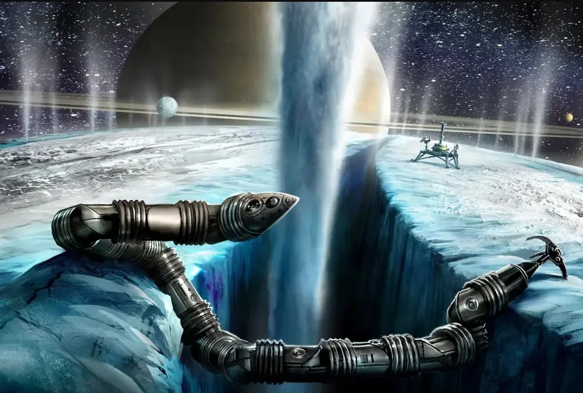

NASA desenvolve robô semelhante a uma cobra para ser usado em Saturno
O Laboratório de Propulsão a Jato da NASA está testando um novo robô semelhante a uma cobra, especialmente projetado para conseguir se mover em lugares considerados hostis. Chamado Exobiologia Extant Life Surveyor (EELS), o robô será inicialmente utilizado na superfície de Encélado, uma das 83 luas de Saturno, a fim de examinar suas características, segundo o New York Post.
Ler Mais
Empresa de tecnologia abre 70 vagas de emprego
Com foco em ampliar seus negócios, a Senior Sistemas está com mais de 70 oportunidades de emprego em diversas áreas de atuação, entre elas tecnologia, atividades administrativas e comercial. Os candidatos podem concorrer a vagas em diversos escritórios da companhia: Blumenau, Joinville, Porto Alegre, Curitiba, Cuiabá, Campo Grande, Brasília, Itu, São Paulo, Ribeirão Preto, Rio de Janeiro, Recife, Goiânia, Belo Horizonte, além da unidade em Bogotá, na Colômbia.
Ler Mais
EUA lançam processo para financiar criação de novos centros de tecnologia
O montante de US$ 500 milhões faz parte de um pacote de US$ 10 bilhões da lei conhecida como CHIPS e Science Act, aprovada no ano passado, para estimular investimentos em novas tecnologias, como inteligência artificial, computação quântica e biotecnologia.A ideia é expandir para o resto dos EUA investimentos em tecnologia que hoje estão amplamente concentrados em algumas poucas cidades americanas, como Austin (Texas), Boston, Nova York, São Francisco e Seattle. Fonte: Associated Press.
Ler Mais